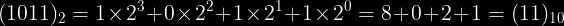

Group the binary number into groups of four digits and match them with the corresponding hexadecimal value. For
example:
Write the corresponding binary number for each digit of the hexadecimal number. For example:
The corresponding decimal number to a binary or hexadecimal number will be the sum of their digits multiplied by
powers of 2 for binary
, and 16 for hexadecimal. The exponent depends on what position the digit is in. By convention, the zeroth power
is the right most.
For example:


Select the base of your number in the top row and the base you want to convert it to in the bottom row.
. In computer systems, there are several different techniques used to represent numbers. The three techniques consider here are Sign Magnitude, Two's Complement, and One's Complement.
In signed magnitude, the most significant bit acts as the sign. The max range of an n-bit number
using sign magnitude is between  and
and
 . Note that,
there are two representations for zero with sign magnitude, for example 10000000 and 00000000.
. Note that,
there are two representations for zero with sign magnitude, for example 10000000 and 00000000.
To make this representation:
Convert the absolute value of the number to binary.
Pad bits if needed and use the MSb for the sign: 0 for positive, 1 for negative.
A ones' complement system or ones' complement arithmetic is a system in which negative numbers
are represented by the inverse of the binary representations of their corresponding positive numbers.
The max range
of an n-bit number using one's complement is between  and
and  .
Note that like sign magnitude representation, there is also two ways to represent zero with one's
complement, 1111 and 0000 for example.
.
Note that like sign magnitude representation, there is also two ways to represent zero with one's
complement, 1111 and 0000 for example.
To make this representation:
Convert the absolute value of the number to binary and pad 0's if needed.
If the number is greater than zero, we are finished. Else:
Complement the binary number.
Two's complement is the most common method of representing signed integers on computers, and more
generally, fixed point binary values.
Compared to other systems for representing signed numbers (e.g., ones' complement), two's complement has
the advantage that the fundamental arithmetic operations of addition, subtraction, and multiplication
are identical to those for unsigned binary numbers (as long as the inputs are represented
in the same number of bits as the output, and any overflow beyond those bits is discarded from the
result). This property makes the system simpler to implement,
especially for higher-precision arithmetic. Unlike ones' complement systems, two's complement has no
representation for negative zero, and thus does not suffer
from its associated difficulties. The max range of an n-bit number using two's complement is between
 and
and 
To make this representation:
Find the one's complement representation of the number.
If the number is negative, add one to the result of the one's complement.
42 in binary is 101010. Padding to 8-bits and using the MSb for sign, we have 00101010 as the sign magnitude
representation.
Since 42 is positive, the one's and two's complement representation will also be 00101010.
13 in binary is 1101. Padding to 8-bits and using MSb for sign, we have 10001101 as the sign magnitude
representation.
Since -13 is negative, the one's complement will be (00001101)^c = 11110010. The two's complement will be
11110010+1 = 11110011.